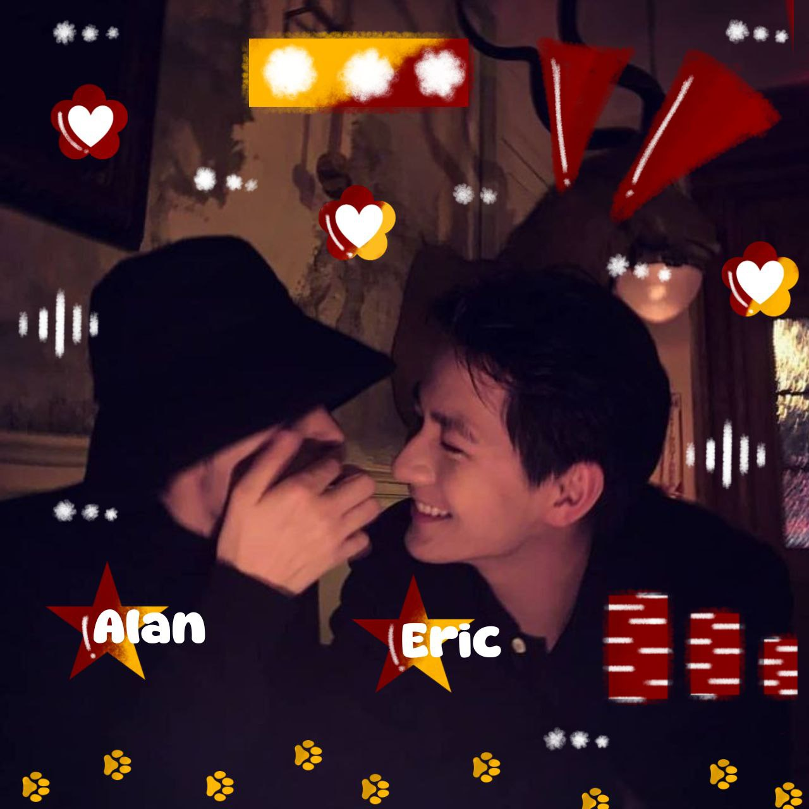
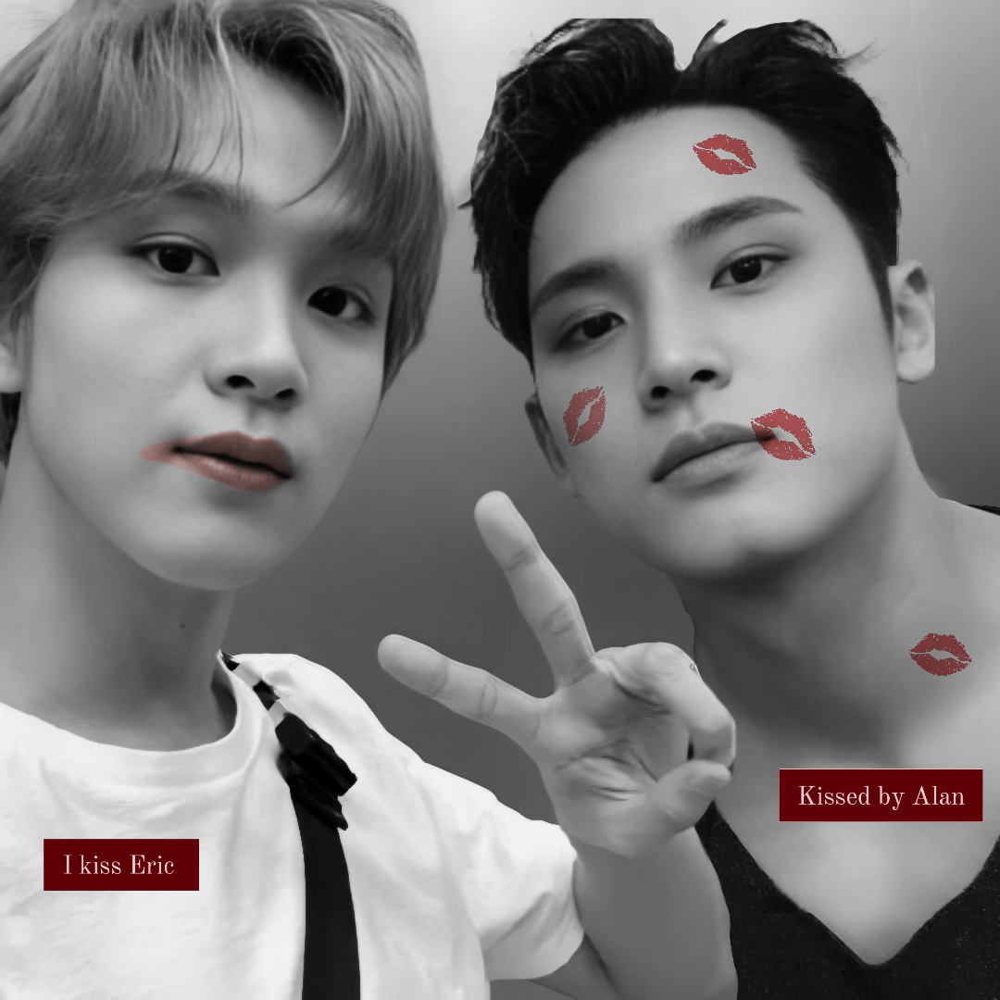

Begitu banyak hal yang telah terjadi sejak awal perjalanan ini dimulai. Jika harus menceritakannya secara mendetail, mungkin kisah ini akan menjadi begitu panjang. Namun, di sini, aku akan merangkumnya dalam sebuah cerita singkat tentang bagaimana aku, Eric Cassius, dan Kalandra bisa sampai pada titik ini.
Bersama, kami telah melewati begitu banyak momen—tawa, harapan, bahkan tantangan yang sesekali menguji hubungan ini. Namun, setiap rintangan yang datang justru semakin menguatkan kami. Dari sekadar pertemuan di dunia virtual hingga menjadi bagian nyata dalam hidup satu sama lain, semuanya adalah bagian dari kisah yang membuat hubungan ini berharga.
Kami memulai hubungan ini pada 1 Oktober 2025, dan hingga saat ini, kami masih bersama. Yang lucu dari kisah kami adalah betapa tak terduganya semuanya. Sejak awal, kami justru sering bertengkar hampir setiap hari—seolah-olah tidak ada yang mengira bahwa akhirnya kami akan bersama. Tapi mungkin memang begitulah takdir bekerja, bukan? Haha.
Sebuah hubungan tentu tidak akan selalu berjalan mulus tanpa hambatan. Kami pun pernah menghadapi berbagai permasalahan. Ada saat-saat ketika salah satu dari kami kesal, tapi memilih diam daripada membicarakannya. Ada juga waktu di mana kesibukan membuat salah satu dari kami jarang aktif, hingga percakapan hanya sebatas bertukar kabar singkat.
Namun, di balik semua itu, kami berhasil melewati setiap tantangan. Lebih dari sekadar bertahan, kami belajar untuk saling memahami. Mungkin yang membuat kami tetap kuat adalah kepercayaan satu sama lain dan komunikasi yang terus terjaga—karena tanpa itu, kesalahpahaman bisa saja membuat semuanya berantakan.
Setiap momen yang kita jalani adalah kenangan indah, bukan hanya karena tawa dan kebahagiaan yang menyertainya, tetapi juga karena setiap detik yang kita habiskan bersama memiliki makna. Ada hari-hari di mana semuanya terasa ringan, penuh canda dan kehangatan, namun ada juga saat-saat di mana kita harus saling menguatkan di tengah kesulitan. Tapi justru dari situlah, setiap kisah yang terukir menjadi begitu berharga—bukan karena kesempurnaannya, melainkan karena kita memilih untuk tetap bersama, apa pun yang terjadi.
 "Blessed" bukan sekadar lagu bagi kami—ini adalah cerminan dari bagaimana kami saling menerima, bertahan, dan bersyukur atas satu sama lain. Meskipun tak selalu sempurna, kami tetap di sini, berjalan bersama. Setiap liriknya seperti menggambarkan hubungan ini, penuh ketulusan dan rasa syukur. Karena pada akhirnya, bersamanya adalah hal terbaik yang pernah terjadi, dan untuk itu, aku merasa sangat diberkati.
Terima kasih telah menjadi bagian dari kisah ini, mengisi setiap halaman dengan tawa, cerita, dan kebersamaan yang tak ternilai. Setiap momen yang kita lalui, baik yang penuh kebahagiaan maupun tantangan, telah membentuk hubungan ini menjadi lebih kuat. Aku bersyukur atas setiap detik yang telah kita jalani, dan aku berharap kebersamaan ini akan terus bertahan, melewati hari-hari yang masih menanti di depan. Semoga kita selalu berjalan beriringan, saling menggenggam dalam segala keadaan, hingga tak ada lagi hitungan waktu yang bisa memisahkan.